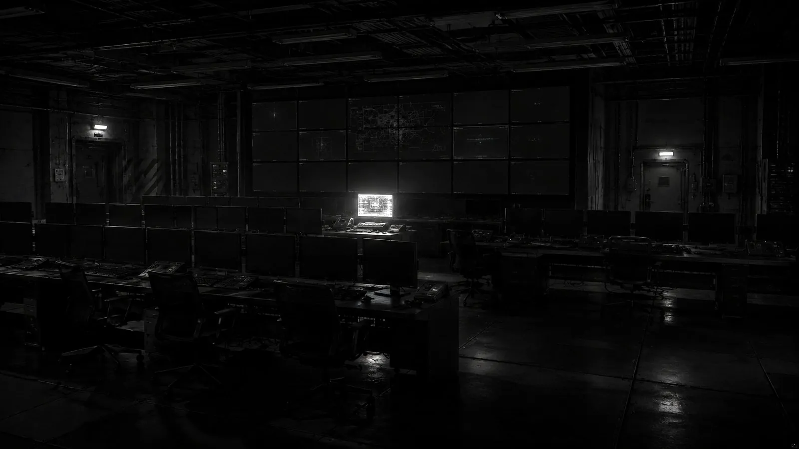

FRAGMENTS / PUBLIC CLUES
기록은 달라도,
단서는 남는다.
병원 화면과 가족 통지가 다르고, 지워진 글 뒤에 목소리가 남습니다.
이야기는 그 작은 어긋남에서 시작됩니다.
공개된 이야기의 입구입니다. 사건의 전말은 아직 드러나지 않았습니다.
NO MATCHING RECORDS
일치하는 기록이 없습니다.
다른 단어로 검색하거나 분류를 바꿔보세요.

YOUR NEXT RECORD
이 세계를,
당신의 선택으로.
TERMINAL SESSION
한국지부 지휘관이 되어 카드를 선택하고,
봉쇄·자원·신뢰·평가 사이에서 결정을 내립니다.